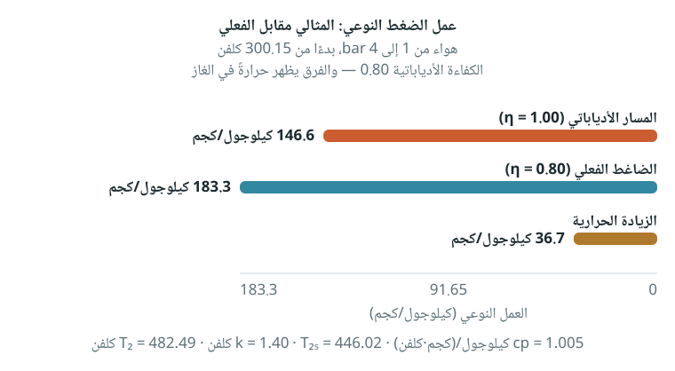

كفاءة الضاغط الأدياباتية: الفرق بين الحرارة التي كان يمكن بلوغها والتي تُبلَغ فعلًا
Isentropic (Adiabatic) Compressor Efficiency
كفاءة الضاغط الأدياباتية تقيس ما يبقى من عمل الضغط القابل للاسترجاع: نسبة عمل المسار الأدياباتي القابل للعكس إلى العمل الفعلي. في ضغط الهواء من 1 إلى 4 bar بدءًا من 300.15 كلفن تخرج الحرارة 446.02 كلفن في المسار المثالي، و482.49 كلفن عند كفاءة 0.80 — أي عمل فعلي 183.3 بدل 146.6 كيلوجول/كجم.
اضغط كيلوغرامًا من الهواء من 1 إلى 4 bar وأنت تبدأ من 300.15 كلفن. المسار الذي لا يولّد إنتروبيا يخرج عند 446.02 كلفن، ويستهلك 146.6 كيلوجول/كجم من العمل. الضاغط الحقيقي بكفاءة أدياباتية 0.80 يحتاج 183.3 كيلوجول/كجم، ويخرج عند 482.49 كلفن. الفارق 36.7 كيلوجول/كجم لا يضيع: يبقى داخل الغاز حرارةً، فيدخل المبادل اللاحق أو غرفة الاحتراق ساخنًا بلا عمل إضافي منه.
الكفاءة هنا نسبة لا مقياس كمال: 0.80 تعني أن خمس العمل المثالي أُضيف إلى الغاز إنتروبيا. ولذلك يسأل تصميم الضواغط عن مسارين لا عن رقم واحد — كم كلفة الضغط، وكم ستكلّف إزالة الحرارة الزائدة بعده. ولهذا تُقاس كفاءة الضاغط بالإنتروبيا لا بدرجة الحرارة وحدها: ضاغط يخرج عند الحرارة المتوقعة قد يكون أسوأ إن ضُخّت فيه حرارة من محيطه أو من تبريد داخلي غير محسوب.
كيف تعمل الظاهرة؟
داخل الضاغط يمرّ الغاز عبر ممرات متغيّرة المقطع بسرعة عالية، فتتحول جزء من طاقته الحركية إلى ضغط عند الناشر، ويُفقد جزء آخر في طبقات حدّية واحتكاك بجدران الدوّار والموجّهات وارتداد طرف الشفرة وتسريب عبر الخلوص. كل آلية من هذه تولّد إنتروبيا: الطاقة تبقى محفوظة لكنها تصبح غير قابلة للتحويل إلى عمل بلا ضياع إضافي. النتيجة أن الغاز يخرج أسخن من المسار المثالي عند الضغط نفسه، ومحتواه الحراري الزائد هو نفسه العمل الإضافي الذي دخل من العمود، لا حرارة جاءت من الخارج.
العلاقة بالأرقام
المسار الأدياباتي القابل للعكس للغاز المثالي: T₂ₛ = T₁·(p₂/p₁)^((k−1)/k). بالهواء: (k−1)/k = (1.40−1)/1.40 = 0.2857، و4^0.2857 = 1.486، فـ T₂ₛ = 300.15 × 1.486 = 446.02 كلفن. العمل النوعي wₛ = cp·(T₂ₛ − T₁) = 1.005 × 145.87 = 146.6 كيلوجول/كجم. والكفاءة الأدياباتية η = wₛ/w، فالعمل الفعلي w = 146.6/0.80 = 183.3 كيلوجول/كجم، و T₂ = 300.15 + 145.87/0.80 = 482.49 كلفن. زيادة العمل 36.7 كيلوجول/كجم = 25% فوق المثالي — وهي نسبة ثابتة تساوي (1/η − 1) ما دام cp ثابتًا.
مفاهيم متقاربة
ليست الكفاءة الأدياباتية هي الكفاءة الحجمية (نسبة الحجم المدفوع إلى الحجم النظري للمزاحة) ولا الكفاءة الميكانيكية (نسبة ما يصل الغاز إلى ما يدخل العمود)، وكلتاهما تُضرب فيها لاحقًا للوصول إلى كفاءة كلية. وليست كذلك الكفاءة متعددة التغيرات (polytropic)، وهي أعلى في الضواغط متعددة المراحل لأنها تفصل أثر كل مرحلة عن الحرارة التي يسحبها التبريد البيني؛ ضاغط بثلاث مراحل مبرَّدة بينها يبدو بكفاءة متعددة التغيرات 0.88 وبكفاءة أدياباتية كلية أقل بكثير، والرقمان صحيحان لأنهما يجيبان عن سؤالين مختلفين.
حدود التطبيق
تفترض الصيغة غازًا مثاليًّا بـ cp و k ثابتين على مدى الحرارة كله، وهذا يفشل عند نسب ضغط عالية أو غازات ثقيلة أو قرب نقطة التكثّف. ولا تصلح عند وجود تبريد داخلي أو حقن سائل: عندئذٍ تُحسب الكفاءة على المسار الكلي أو تُستبدل بالكفاءة متعددة التغيرات. وأخيرًا فإن رقم الكفاءة يصف الضاغط وحده لا المنظومة؛ كفاءة 0.80 في الضاغط مع فقد 5% في الناقل والمحرك تعطي كفاءة منظومة 0.76، وهو الرقم الذي يجب أن يُستخدم في مقارنة استهلاك الطاقة.

| الكمية | القيمة | المصدر |
|---|---|---|
| الحرارة النوعية للهواء عند ضغط ثابت | 1.005 كيلوجول/(كجم·كلفن) | [1] |
| نسبة الحرارة النوعية للهواء | 1.40 — | [2] |
| حرارة الخروج في المسار الأدياباتي (1→4 bar من 300.15 كلفن) | 446.02 كلفن | [3] |
| العمل النوعي في المسار الأدياباتي | 146.6 كيلوجول/كجم | [3] |
| حرارة الخروج عند كفاءة أدياباتية 0.80 | 482.49 كلفن | [3] |
| العمل النوعي الفعلي عند كفاءة 0.80 | 183.3 كيلوجول/كجم | [3] |
| العمل الإضافي الذي يظهر حرارةً في الغاز | 36.7 كيلوجول/كجم | [3] |
| نسبة العمل الفعلي إلى المثالي عند كفاءة 0.80 | 25 % | [3] |
المصادر
- 1 Specific Heat Capacity of Air: Isobaric and Isochoric Heat Capacities at Various Temperatures and Pressures — The Engineering ToolBox. www.engineeringtoolbox.com/air-specific-heat-capacity-d_705.html · اطُّلع عليه 2026-11-19
- 2 Gases - Ratios of Specific Heat — The Engineering ToolBox. www.engineeringtoolbox.com/specific-heat-ratio-d_608.html · اطُّلع عليه 2026-11-19
- 3 4.6 Entropy — University Physics Volume 2 — OpenStax. openstax.org/books/university-physics-volume-2/pages/4-6-entropy · اطُّلع عليه 2026-11-19
استشهد بهذا المصطلح
الصيغتان مبنيتان من بيانات الصفحة نفسها: العنوان والتاريخ ورابط النسخة المنشورة.
كفاءة الضاغط الأدياباتية: الفرق بين الحرارة التي كان يمكن بلوغها والتي تُبلَغ فعلًا — Isentropic (Adiabatic) Compressor Efficiency. (2026). ديوان المعرفة — انفراد. https://infiradev.com/diwan/terms/isentropic-compressor-efficiency.html
@misc{isentropic-compressor-efficiency2026,
title = {كفاءة الضاغط الأدياباتية: الفرق بين الحرارة التي كان يمكن بلوغها والتي تُبلَغ فعلًا},
titleaddon = {Isentropic (Adiabatic) Compressor Efficiency},
howpublished = {{ديوان المعرفة — انفراد} — مرجع علمي عربي},
year = {2026},
url = {https://infiradev.com/diwan/terms/isentropic-compressor-efficiency.html},
urldate = {2026-11-19},
note = {مراجعة علمية: عبدالله الهويدي — مراجعة في تطبيق انفراد}
}
راجعه: عبدالله الهويدي — مراجعة في تطبيق انفراد · 2026-11-19 · آخر تحديث 2026-11-19